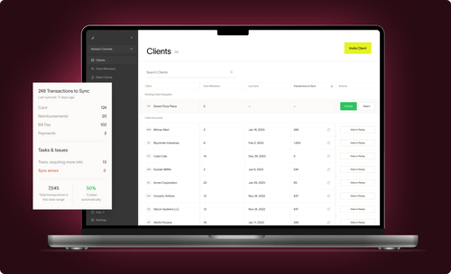
Established companies providing expense-management solutions have grown their businesses drastically through their accounting channel (where the accounting partners are bringing in more clients via referrals and connections).
The Growth team at Ramp wanted to leverage that opportunity and hence the idea of Ramp Advisor Console was born. Ramp had strong accounting partnership program and we wanted to leverage that partnership to launch a product that makes the accountant’s lives easier. This will, in-turn, motivate the accountant partners to bring other clients (not on Ramp) to the Ramp ecosystem.
I worked as the only designer on this project with 1 PM and a team of 5 developers from late 2022 to early 2023. This case study showcases the work of around 2 months.
When I joined the team, the Advisor Console was in early design stages. The task was to take the Advisor Console from there to GA launch while building & iterating on the core features to bullet-proof the product.
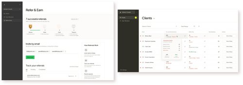
Managing clients, accountants, and roles gets cumbersome and lengthy for the admins if multiple clients are involved.
One-stop-shop to manage permissions, team, & clients - all while enabling referrals and highlighting priority actions. Key features (among many others):
• Navigate between client accounts in seconds.
• Assign staff only to the clients they work on and secure your clients' data.
• Refer your clients to Ramp directly in the Advisor Console.
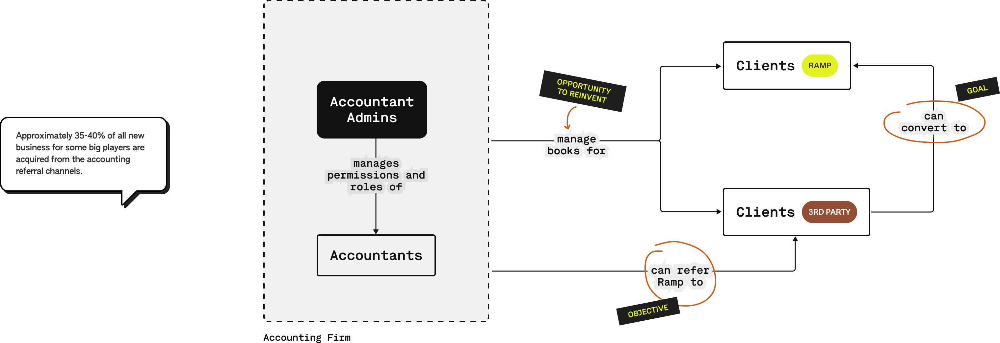
A set of relevant and actionable data-points from each client’s Ramp account, surfaced on the console.
Primary goal: Give advisor console users the ability to centralize insights across clients without having to click into each client account. We believe that these insights will be primarily leveraged to improve internal processes for accountants, rather than being directly client facing.
Today to understand how much work needs to be done across an accounting firm to close the books takes clicking into every client instance and navigating to the accounting tab (300+ clicks for an accounting firm like Kruze & doing strange stuff like sending empty accounting tab screenshot). We want to shorten this time to 0-1 click.

I need to know if/when my accountants have closed the books and what are the top things/clients that need my attention.
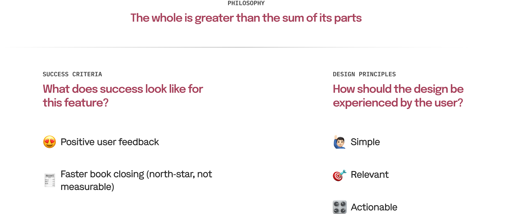
The explorations were a mix of existing Ryu (Ramp design system) elements and new ones. The idea was to figure out the best and the most efficient layout before taking the final ones to the users for review.
Takeaway: Remove search and rethink hierarchy.
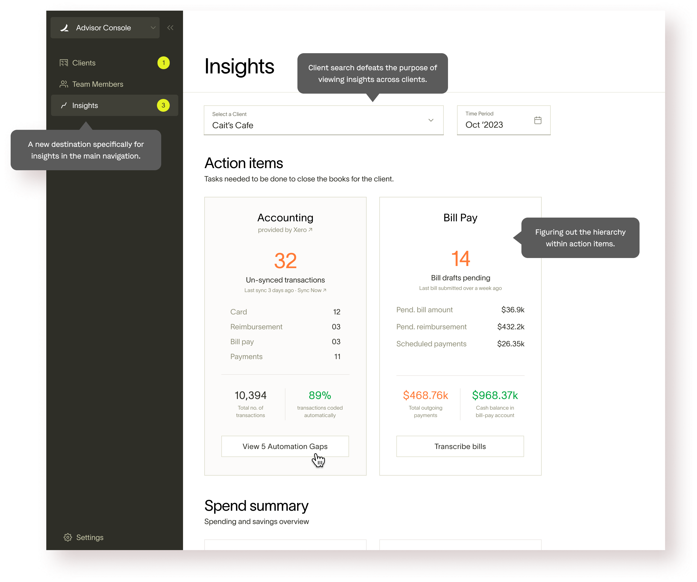
Takeaway: Tabular layout works better but the client list is redundant. Only data, no actions. Too much deviation from the current system.
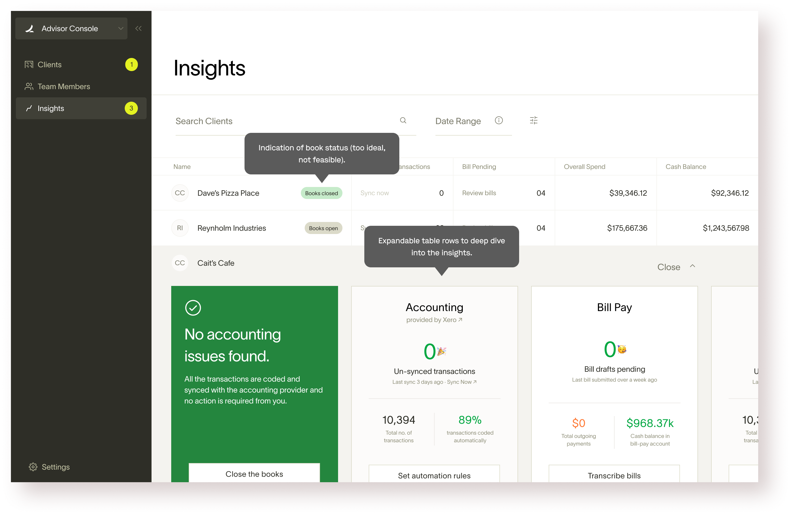
Takeaway: Using drawer for insights is more in-line with the system without much downside.
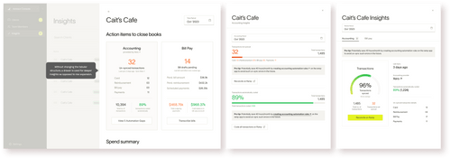
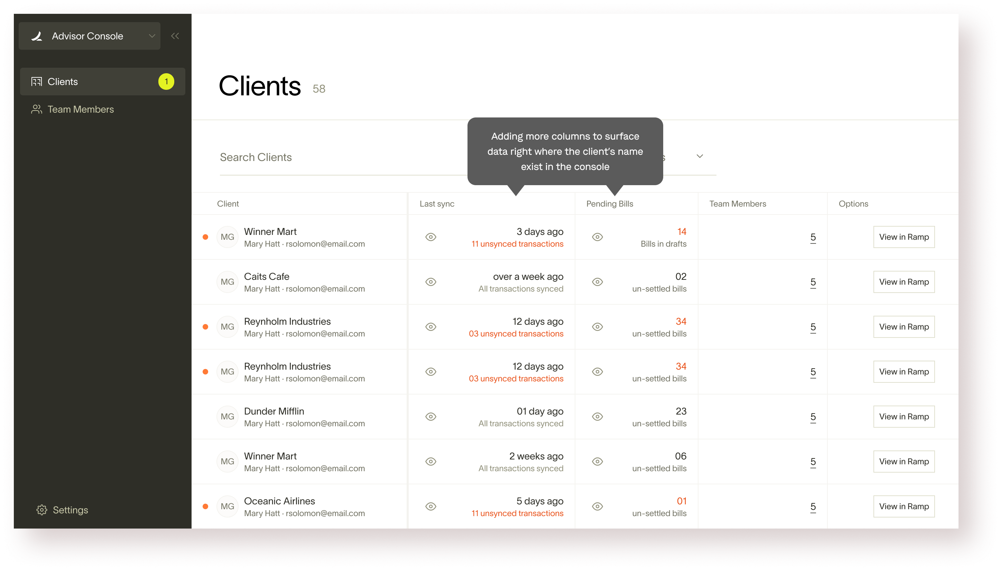
Takeaway: This exploration highlighted the need for better hierarchy (and new potential interactions)
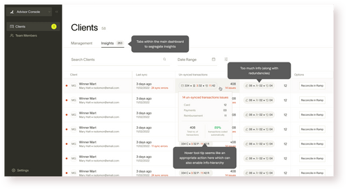
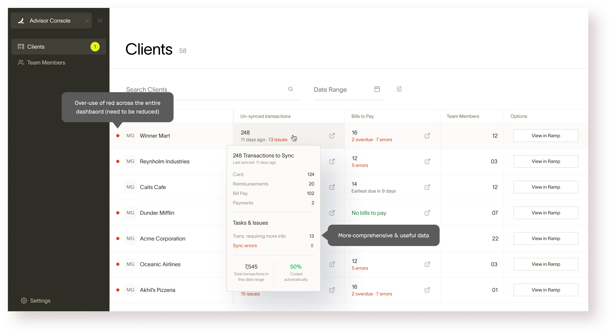
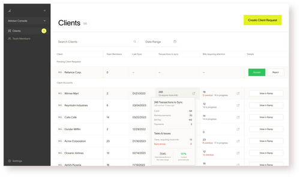
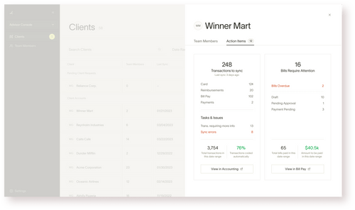
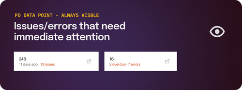
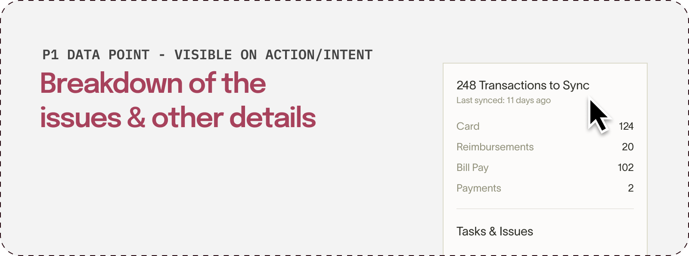
It was easy to come up with overlapping actions for the console as well as the ramp app to seemingly make the users’ job easier. But the team made a conscious decision not to do it.
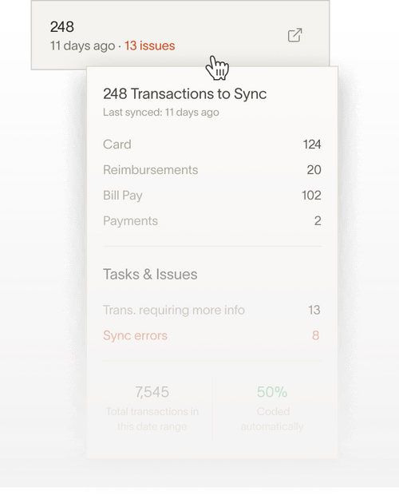
Although the hover interaction was loved by the users, it was a humongous lift from an engineering perspective and hence we had to let it go.
I should’ve reached the final options earlier without having to go through the multiple iterations. That could’ve been potentially achieved by internalizing the user workflow better.
What were we trying to solve for: Ramp has a robust accounting partnership referral program for accountants that outlines different incentive tiers (silver, gold, etc.) but we did not have any control over the channels through which the referrals were happening. There was no formal avenue for the accountants to refer external clients. We wanted to change that by bringing native referral capability within the Advisor Console.
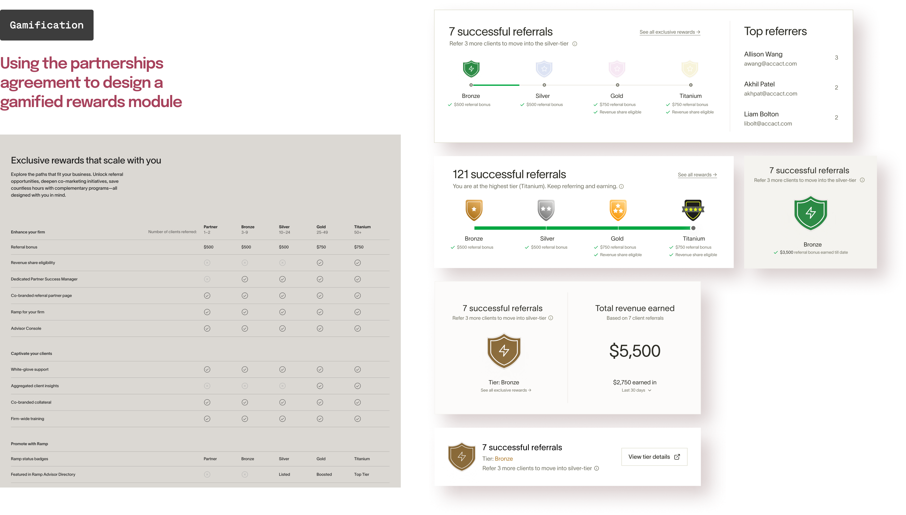
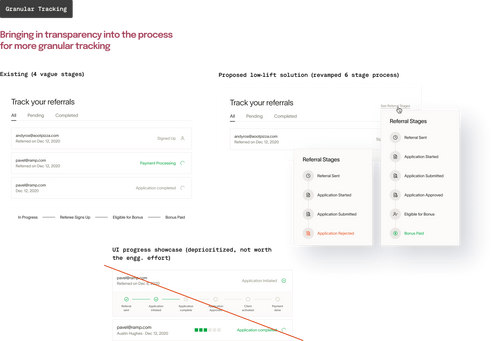
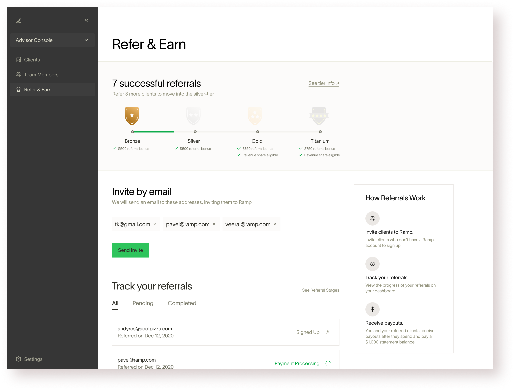
The Advisor Console was an instant success in the Accountants' community. We got numerous applications from 50+ accounting firms for beta access in the first month of launch.
Accounting firms onboarded
WoW growth for the initial 3 months
weekly referrals sent out from the console